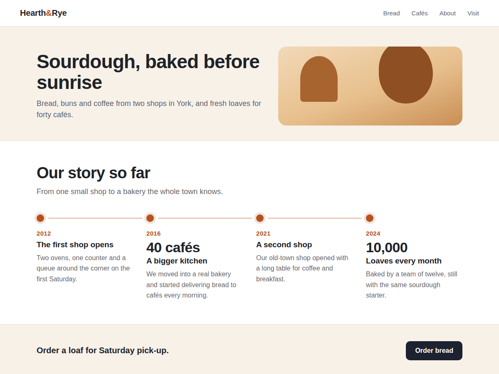

Milestones
Show your milestones and history on a timeline
- Looks finished before you change a thing
- Dates, titles, text and an optional big number
- Side by side or one below the other
- Stacks neatly on phones and narrow columns

What it does
An about page tells a better story with dates on it: when the shop opened, when the second one followed, the year you passed a thousand customers. Milestones puts those moments on a timeline, so visitors see how far you have come at a glance.
It looks finished the moment it lands on the page, with a heading and four sample milestones in your site's font. In the editor you click the widget and open Settings, where each milestone has a date, a title and a short text. The date is shown as you write it, from a plain year to a month or a season. Any milestone can also carry a big number, like 10,000 orders or 40 partners.
Milestones sit side by side or one below the other, as plain text or on cards, with round or square dots. On phones and in narrow columns they stack with the line running down the side. It is all ordinary page text, so screen readers and search engines read it.
The free plan shows up to 5 milestones per timeline, with no branding. Premium allows up to 30, a zig-zag layout with the line down the middle, an icon in each dot, a link under each milestone, planned milestones shown as still to come, dashed or dotted lines and milestones that appear one by one on scroll.
Price
Free
- Up to 5 milestones per timeline
- Side by side or stacked layout
- Big numbers, colours, font, cards
- No branding on your site
Premium
$4/month, or $3.20/month billed yearly (20% off)
- Up to 30 milestones per timeline
- Zig-zag layout, icons in the dots
- A link on each milestone
- Planned tags, line styles, animation